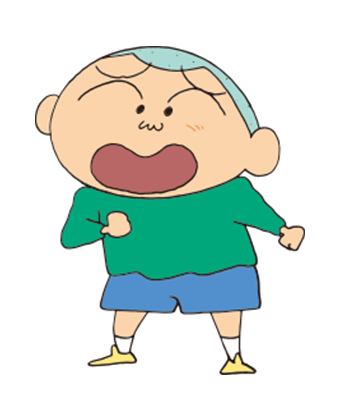

img 태그

대체 텍스트는 그림이 출력되지 않을 때, 어떤 요소인지 글자로 알려주기 위해 사용한다

img 태그는 글자와 동일하게 취급한다. 그림 옆에 그림을 둘 수 있다

이미지의 너비나 높이를 하나만 지정하면, 비율에 따라 나머지 크기가 설정된디
이미지의 너비와 높이를 모두 지정하면, 비율이 무너질 수 있다

이미지도 글자 취급이므로,링크의 대상이 될 수 있다


img태그의 title속성으로 마우스 올렸을 때 툴팁을 설정할 수 있다

이미지의 경로에는 웹 경로도 지정 할 수 있다 (단 서버가 허락해야 함)

움직이는 그림등 다양한 그림 포맷을 지원한다